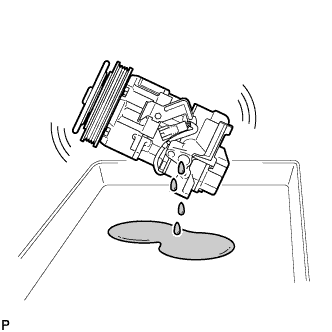
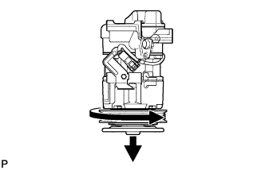
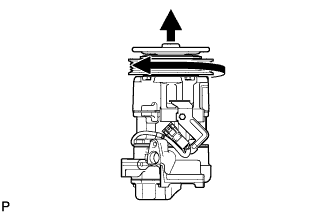
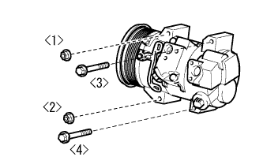

Compressor Assembly (Engine Type 2AZ-FE) Installation |
| 1. Compressor Oil Level Inspection |
When replacing with a new compressor assembly (with pulley), gradually release the inert (helium) gas from the service valve, then drain the amount of oil shown below before installation.
Remove the suction seal cap.
 |
Drain the oil while lightly shaking the compressor with the suction port facing down. (*1)
 |
With the DL pulley side facing down, rotate the pulley clockwise 10 times at a speed of about 1 time every 2 seconds. (*2)
 |
Quickly turn the DL pulley side upward and rotate the pulley clockwise 1 times. (*3)
Perform the operation (*1) above to drain the oil. (*4)
Repeat the operations (*2) to (*4) above about 5 times to drain the standard amount of oil.
| 2. Compressor Assembly (with Pulley) Temporary Tightening |
 |
Using a Torx socket wrench (E8), temporarily install the compressor assembly (with pulley) with 2 stud bolts.
| 3. Compressor Assembly (with Pulley) Final Tightening |
 |
Install the compressor assembly (with pulley) with 2 bolts and 2 nuts in the order shown in the illustration.
Connect the connector.
| 4. Install Discharge Hose Sub-assembly |
Peel off the vinyl tape wrapped around the joints of the discharge hose and compressor assembly (with pulley).
Apply sufficient compressor oil (ND-OIL8) to a new O-ring and the fitting surface of the compressor assembly (with pulley).
Install the O-ring to the discharge hose.
 |
Install the discharge hose to the compressor assembly (with pulley) with the bolt.
| 5. Install Suction Hose Sub-assembly |
Peel off the vinyl tape wrapped around the joints of the suction hose and compressor assembly (with pulley).
Apply sufficient compressor oil (ND-OIL8) to a new O-ring and the fitting surface of the compressor assembly (with pulley).
Install the O-ring to the suction hose.
 |
Install the suction hose to the compressor assembly (with pulley) with the bolt.
| 6. Charge Refrigerant HFC-134a (R134a) |
Evacuate the system using a vacuum pump.
Charge with refrigerant HFC-134a (R134a).

| 7. Install Fan & Alternator V Belt |
 |
Using SST, slowly turn the V-belt tensioner clockwise and install the V-belt.
 |
Check that the belt is fitted on each pulley.
 |
Check that the belt is correctly set on each pulley.
Start the engine and check that the belt rotates smoothly with no abnormal noise.
| 8. Warm Up Engine |
| 9. Inspect for Refrigerant Gas Leaks |
After charging the refrigerant gas, inspect for refrigerant gas leaks using a halogen leak detector.
| 10. Install Radiator Upper Air Deflector |
Install the radiator upper air deflector with the 8 clips.
| 11. Install Engine Under Cover Rear RH |
| 12. Install Front Tire RH |